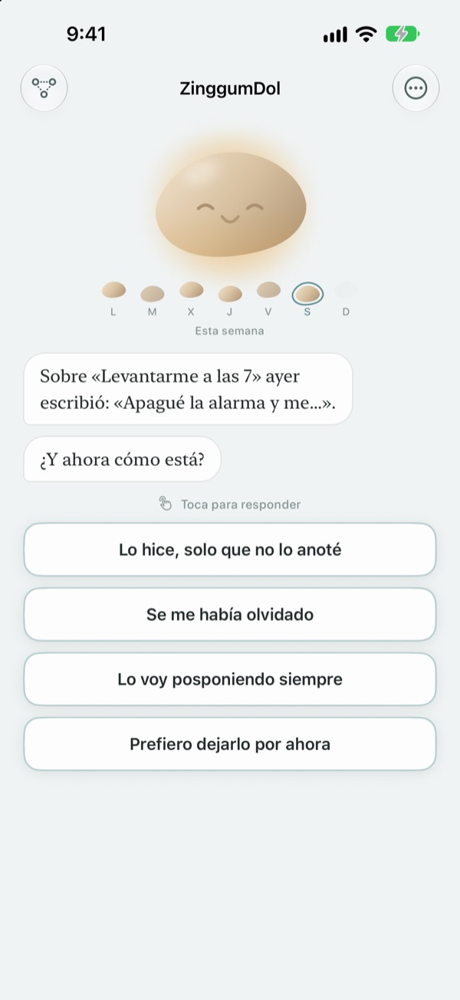
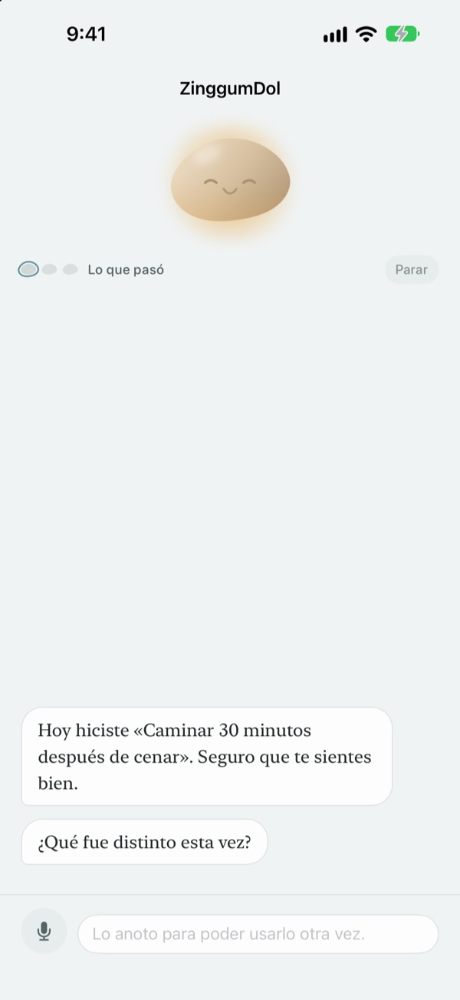
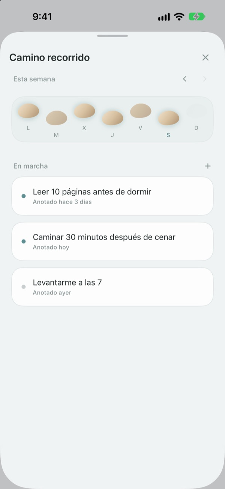
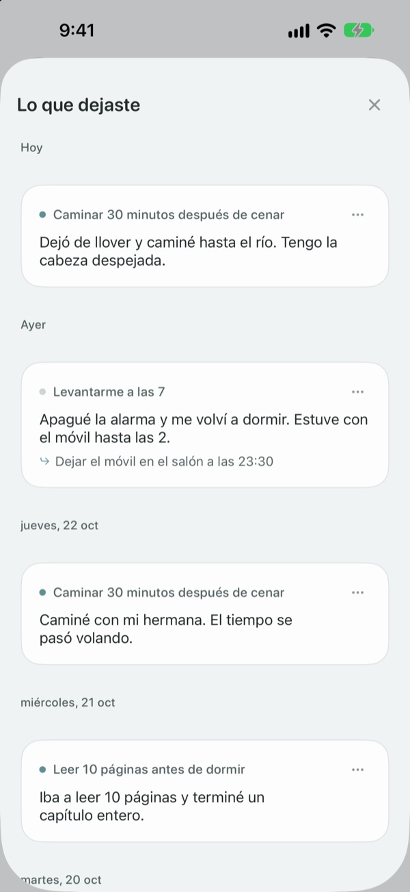

Dar un traspié
no es caerse al río
El día que no cumples tu objetivo, el guijarro te habla primero. Te pregunta qué pasó, no qué hiciste mal, y te devuelve los hechos y lo que sientes por separado.
Hablar, escribir y ver tu camino es gratis. Sin registro ni anuncios.

Habla con el guijarro
Hoy ibas a salir a caminar por la tarde y no lo hiciste. Elige una respuesta o escribe la tuya, y el guijarro contesta igual que en la app.
Cuando un día no sale como querías, ¿te echas la culpa?
La noche que te saltas el entrenamiento, lo primero que piensas suele ser «¿qué me pasa?». Si lo miras con calma, hubo horas extra, llovió, estabas agotado. ZinggumDol te pregunta qué pasó y cómo te sientes en turnos distintos, y pone las dos cosas una al lado de la otra. Cuando ves que fueron las circunstancias y no tu fuerza de voluntad, es más fácil encontrar el siguiente paso pequeño.
El guijarro habla primero
Ponte un objetivo y el guijarro estará pendiente de los días que lo lograste y de los que te atascaste. Cuando se te escapa un día, pregunta «¿qué pasó?» en lugar de «¿por qué no?», y recuerda lo que le contaste la última vez.
Los días en que escribir se hace cuesta arriba, dilo en voz alta. La voz se reconoce en tu dispositivo y las grabaciones no se guardan nunca.

Tus días, como piedras para cruzar el río
Cada semana se extiende como una fila de piedras. Los días que no pisaste también se quedan ahí; no se borra nada.
Aunque haya un hueco o dos, ves que el camino sigue.

Vuelve a leer lo que escribiste
Lo que pasó, cómo te sentiste y qué vas a probar después se van guardando por fecha. Relee un día en que te atascaste igual y verás qué funcionó.
Un widget te muestra una frase del guijarro en la pantalla de inicio, y un aviso a la hora que elijas te invita a repasar el día.

Empezar lleva tres pasos
- 1
Escribe un objetivo
Algo como «Caminar 30 minutos después de cenar».
- 2
Abre la app al acabar el día
El guijarro te pregunta qué tal te fue. Con un aviso diario no se te olvida.
- 3
Toca o escribe tu respuesta
Puedes parar cuando quieras con
Prefiero dejarlo por ahora.
Así va una conversación
- Lo que pasó
- Solo los hechos: qué se interpuso
- Cómo te sientes
- Cómo te sientes ahora, en una escala de cinco
- Mirar atrás
- El guijarro te devuelve lo que pasó y lo que sientes, por separado
- Siguiente paso
- Tú eliges algo pequeño; con cinco minutos basta
- Cierre
- En un día muy bajo no pregunta nada más y te propone descansar
Puedes salir en cualquier momento y lo que hayas dicho hasta entonces se guarda.
Hablar y escribir es gratis. Pro, si quieres más.
Gratis
- Todas las conversaciones con el guijarro
- Hasta tres objetivos
- Hablar en lugar de escribir
- Tu camino y todo lo que has escrito
- Widget y aviso diario
- Bloqueo con código
ZinggumDol Pro
- Todos los objetivos que quieras
- Seis acabados de guijarro para elegir
- Exportar tus registros como archivo de texto
Se compra una vez y es para siempre. No es una suscripción.
Nunca aparece una pantalla de pago en mitad de una conversación. En un dispositivo nuevo o tras reinstalar, toca Restaurar compras en Ajustes.
Preguntas frecuentes
¿Tengo que explicar cada día que fallo?
No. Toca Prefiero dejarlo por ahora en cualquier momento y la conversación termina ahí. Lo que hayas dicho se guarda para que puedas retomarlo luego.
Lo hice, pero la app dice que no.
Toca Lo hice, solo que no lo anoté. El guijarro acepta la corrección y te pregunta qué te ayudó. Lo que funcionó queda guardado y te lo recordará la próxima vez que te atasques.
¿Adónde va lo que digo en voz alta?
Tu voz se convierte en texto en el propio dispositivo y la grabación no se guarda nunca. En los dispositivos compatibles, además, tus frases se pulen para que se lean mejor, también en el dispositivo.
¿Cuántos objetivos puedo tener?
Tres gratis. Cuando termines con uno, usa Soltar en Camino recorrido para dejar un hueco libre. Para más de tres necesitas ZinggumDol Pro.
¿ZinggumDol Pro es una suscripción?
No. Pagas una vez y es tuyo. En un dispositivo nuevo o tras reinstalar, toca Restaurar compras en Ajustes.
¿Alguien más puede leer mi diario?
No hay cuenta. Tus registros solo están en tu dispositivo y en tu propio iCloud, y puedes bloquear la app con un código en Ajustes. Lo que escribes nunca se envía al desarrollador. También puedes desactivar las estadísticas de uso anónimas en Ajustes.
¿Cómo cambio la hora del aviso?
En Aviso diario, dentro de Ajustes, lo activas o desactivas y eliges la hora.
¿El guijarro me recuerda lo que he logrado?
Sí. Recuerda lo que te funcionó y, en un día difícil, te trae a la memoria algo que conseguiste hace poco.
¿Cómo lo borro todo?
Toca Borrar todos los registros en Ajustes. Tus objetivos y registros desaparecen para siempre, también en otros dispositivos sincronizados con iCloud. Los ajustes y las compras se mantienen. Con Pro puedes guardar antes una copia con Exportar registros.
¿Cómo me pongo en contacto?
Desde «Enviar comentarios» en los Ajustes de la app, o por correo a la dirección de abajo.
¿Dudas o comentarios? Escribe a leeo@kakao.com.